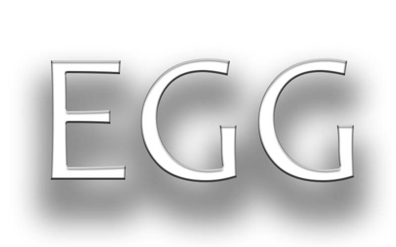

PowerISO da Daemon Tools’a benzer bir yapıda hazırlanmış ve sanal sürücüleri kullanmak için en iyi araçlardan bir
tanesi. Ancak ücretsiz sürümü sunulmayan programın deneme sürümü her ne kadar bir süre kısıtlaması
barındırmasa da 300 MB’lık disklere kadar destek sunuyor ve daha büyük disklerle
işlem yapmak isteyenlerin tam sürümünü satın alması gerekiyor.
Winrar özellikle çok parçalı olarak internete konulan oyunların indirilmesinde kullanılan zip ve rar formatlı dosyaları açabilen
en iyi programlardan bir tanesi. Hem sıkıştırma yapabilmesi hem de sıkıştırılmış olan dosyaları kolaylıkla klasörlere
çıkartabilmesi sayesinde oyun bilgisayarınızda olması gereken programlar arasında yerini koruyor.
Sıkıştırılmış dosyalarla
ilgili işlemler sırasında sadece işlemcinizi değil aynı zamanda ekran kartınızın da işlem kapasitesini kullanabilen
Winrar böylece pek çok rakibine göre büyük bir arşivleme ve arşiv açabilme avantajı kazanıyor.
İndirdiğiniz oyunların onlarca farklı parçadan oluştuğunu görüyor ve nasıl açabileceğinizi
bilmiyorsanız bir de Winrar’ı kurmayı deneyin.
Microsoft tarafından hazırlanan ve oyun geliştiricilere sunulan DirectX, neredeyse bütün oyunların
geliştirilmesinde kullanılıyor ve bu nedenle kullanıcının bilgisayarında en son DirectX sürümü yer almadığında bu oyunları
açmak mümkün olmuyor ve çeşitli hatalar karşımıza çıkabiliyor. DirectX’in her sürümünde daha fazla
performans ve efektler olduğunu dikkate alırsak, bilgisayarınızdaki sürümün arada sırada en son
DirectX sürümü olduğunu kontrol etmekte fayda var.
Pek çok oyunda hile yapmayı sevdiğimiz kesin ancak maalesef her oyun için teker teker hile programlarını indirmek de bir o kadar eziyet.
Açık kaynak kodlu olarak hazırlanan Cheat Engine programı, o an bilgisayarınızın belleğinde açık olan oyunları tespit ediyor ve hile
kullanılabilecek noktaları bularak size oyunun özelliklerini değiştirme olanağı sunuyor.
İstediğiniz oyunlarda can
miktarınızı arttırabilir, azaltabilir, mermilerinizi değiştirebilir, en iyi silahları ve arabaları alabilir yani her oyunun
kendine has özellikleri üzerinde modifikasyonlar gerçekleştirebilirsiniz.
Oyun bilgisayarınızın performansı yüksek olsa da kim biraz daha performans istemez ki?
Game Booster bu konuda pek çok diğer performans arttırma programının önüne çıkıyor ve bilgisayarınızın tüm kaynaklarının
tamamen oyunlardaki performansa aktarılmasını sağlayarak düşük FPS sorunlarının önüne geçebiliyor.
Aynı zamanda bilgisayarınızdaki sürücülerin en son sürüm olduğunu da kontrol
edebilen program böylece eski sürücülerden kaynaklı uyumsuzluklarla karşılaşmanıza engel oluyor.
Oyunların yanında normal bilgisayar kullanımında da performans artışı yakalayabilmenizi sağlayan program ücretsiz
olarak sunuluyor ve bu nedenle her oyun bilgisayarında bulunması gerektiğine inanıyorum.
Oyunlarınızı oynarken çok hoşunuza giden bölümler ya da özellikle yapmak istediğiniz hareketler varsa bunların ekran
görüntülerini hem resim hem de video olarak almanız mümkün. Fraps bu konuda en kaliteli programlardan
birisi ve bir yandan Full HD resim ve video görüntüsü alırken bir yandan da oyun performansına
çok büyük etkilerde bulunmuyor.
Aldığınız ekran görüntülerine dair pek çok kalite ayarı da programın bünyesinde
yer alıyor ve böylece istediğiniz boyutlarda ve kalitelerde video kayıtlarını gerçekleştirmek mümkün.
Oyuna girdiğinizde oyunu kendisi tespit edebilen Fraps, tek bir tuşa basmanızla
kayıdı başlatabiliyor yahut durdurabiliyor.